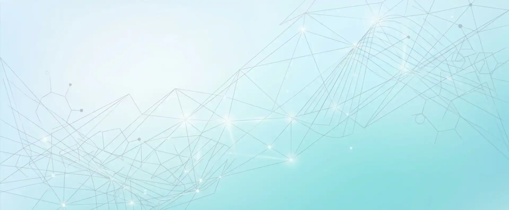
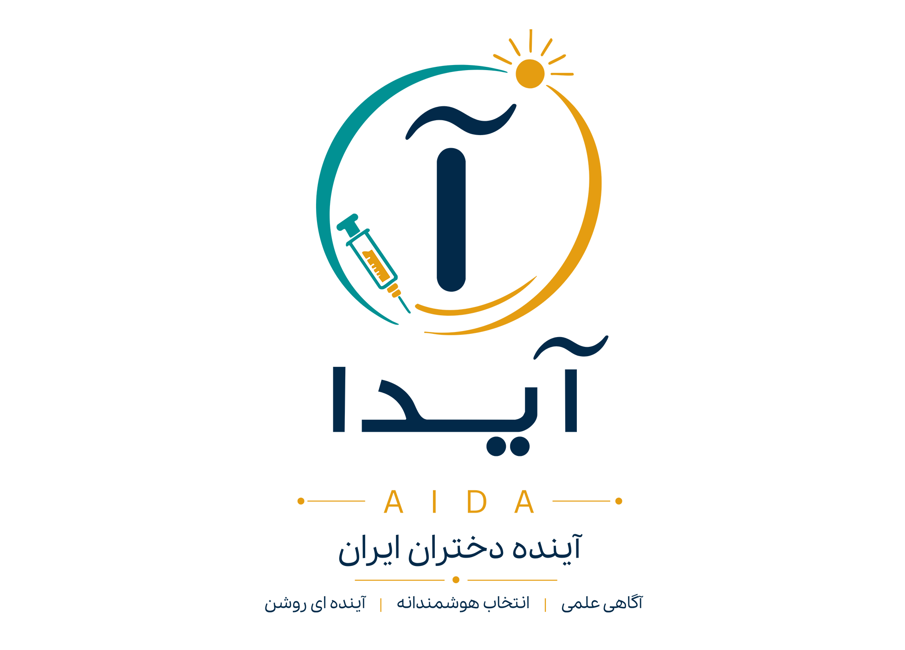
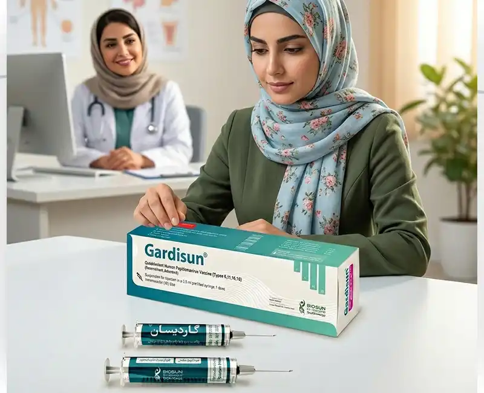

برای ایمنی علیه HPV
آگاهی، انتخاب هوشمندانه و مشارکت اجتماعی
پویشی برای افزایش آگاهی و دسترسی عادلانه به واکسیناسیون HPV
پویش آیدا؛ آینده دختران ایران
آگاهی، پیشگیری و دسترسی عادلانه
آیدا نامی است که یادآور آیندهای سالمتر برای دختران ایران است. هدف این پویش، افزایش آگاهی عمومی و فراهمسازی دسترسی عادلانه به واکسیناسیون ویروس پاپیلومای انسانی (HPV) است.
هر انتخاب هوشمندانه، یک سهم برای آیدا
مشارکت شما فقط یک انتخاب شخصی نیست؛ بخشی از یک حرکت اجتماعی برای ایجاد فرصت واکسیناسیون برای دیگران نیز هست.

به ازای هر ۱۰ نفر که به این پویش میپیوندند، امکان واکسیناسیون رایگان برای ۱ نفر در نقاط کمبرخوردار ایران فراهم میشود.
انتخاب هوشمندانه چیست؟
چهار گام ساده برای مشارکت آگاهانه در پویش
۱. آگاهی
آگاهی درباره HPV و راههای پیشگیری
۲. مشورت
مشورت با پزشک یا داروساز
۳. اقدام مجاز
اقدام از مسیرهای معتبر و مجاز
۴. مشارکت
ثبت خرید و سهیم شدن در واکسیناسیون رایگان

گاردیسان، همراه آیدا
گاردیسان، اولین واکسن HPV چهارظرفیتی ایرانی است که علیه ویروس پاپیلومای انسانی (HPV) که برای مقابله با تیپهای ۶، ۱۱، ۱۶ و ۱۸ طراحی شده است.
پس از خرید واکسن از داروخانه، با ثبت اطلاعات در این وبسایت، مشارکت شما در پویش آیدا ثبت میشود.
اطلاعات بیشتر درباره گاردیسانسوالات متداول
پاسخ به پرسشهای رایج درباره HPV و واکسیناسیون
HPV چیست؟
ویروس HPV یکی از شایعترین عفونتهای ویروسی منتقلشونده است که برخی از انواع آن با سرطان دهانه رحم و چند سرطان دیگر مرتبط هستند.
واکسن HPV از چه بیماریهایی پیشگیری میکند؟
واکسن HPV برای پیشگیری از ابتلا به برخی تیپهای پرخطر HPV طراحی شده است که با سرطان دهانه رحم و برخی سرطانها و زگیل تناسلی مرتبط هستند.
آیا مردان هم باید واکسن بزنند؟
بله. HPV فقط زنان را درگیر نمیکند و واکسیناسیون در مردان نیز در بسیاری از نقاط جهان الزامی میباشد.
بهترین سن تزریق چیست؟
اثربخشی واکسن معمولاً پیش از مواجهه با ویروس و در سنین توصیهشده توسط دستورالعملهای علمی حاصل میشود.
آیا اگر ازدواج کرده باشم هنوز واکسن فایده دارد؟
در بسیاری از موارد ممکن است همچنان مزایایی داشته باشد، اما تصمیم نهایی باید با نظر پزشک انجام شود.
آیا واکسن عوارض دارد؟
مانند هر واکسن دیگری ممکن است عوارض خفیفی مانند درد محل تزریق یا تب خفیف ایجاد شود.
واکسن چند دوز دارد؟
تعداد دوزها بر اساس سن و شرایط فرد متفاوت است. دوز پیشنهاد شده این است: ۹ تا ۱۴ سال — پیش از شروع فعالیت جنسی ۲ دوز؛ امکان تزریق تا ۳۵ سالگی با اثربخشی بالا ۳ دوز؛ تا ۴۵ سال با مشورت پزشک. فاصله زمانی در ماههای صفر، ۲ و ۶.
آیا واکسن جایگزین غربالگری است؟
خیر. واکسیناسیون و غربالگری هر دو اهمیت دارند.
واکسن خود را ثبت کنید
پس از خرید گاردیسان از داروخانه، اطلاعات و عکس محصول را ثبت کنید تا مشارکت شما در پویش آیدا قطعی شود.
ثبت مشارکت